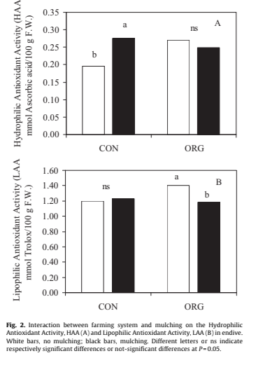

Carbassó ecològic o convecional?
He buscat informació primària acadèmicagoogle acadèmic
He trobat un article científic escrit per Albino et al.(2013) que compara la composició química del carbassó covencional i el carbassó ecològic i os posaré un enllaç de l'article i una imatge que demostri quin carbassó és millor:
Què diu chat gpt sobre el carbassó?
El carbassó ecològic pot tenir més activitat antioxidant que el carbassó convencional,però això depèn de diversos factors. En general, els aliments cultivats de manera ecològica poden presentar nivells més alts de compostos beneficiosos, com els polifenols i les vitamines, que tenen propietats antioxidants. Això és degut a la forma en què es cultiven: sense pesticides químics ni fertilitzants sintètics, cosa que pot estimular la planta a produir més compostos de defensa natural, com els antioxidants.
En el gràfic més amunt podem observar que no posa p<0,05,ni cap*, això vol dir que no hi ha diferències entre la quantitat de compostos antioxidants solubles en aigua(columna a) i compostos antioxidants no solubles en aigua. Es a dir tenen els carbassons ecològics la mateixa quantitat de compostos antioxidants, que al carbassons convencionals.

En aquesta taula podem veure el nivell de fòsfor i de potassi que té el carbassó convecional i el ecològic en el sistema agrígola i en la cultivació.
Podem observar que les diferents lletres indiquen diferències significatives a P = 0,05. que la (a) indica el millor resultat,es a dir, el resultat mes gran i la (b) vol dir el resultat baix, i per això podem veure com en el sistema agrícola, el conventional es millor en el fòsfor i el organic es millor en el potassi, tot això en les fulles, però en els corimbs el fòsfor es igual als dos i el potassi es millor l'orgànic. En comptes, en la cultivació tot es gairebé igual, els resultats son pràcticament iguals i no hi ha gairé diferència.